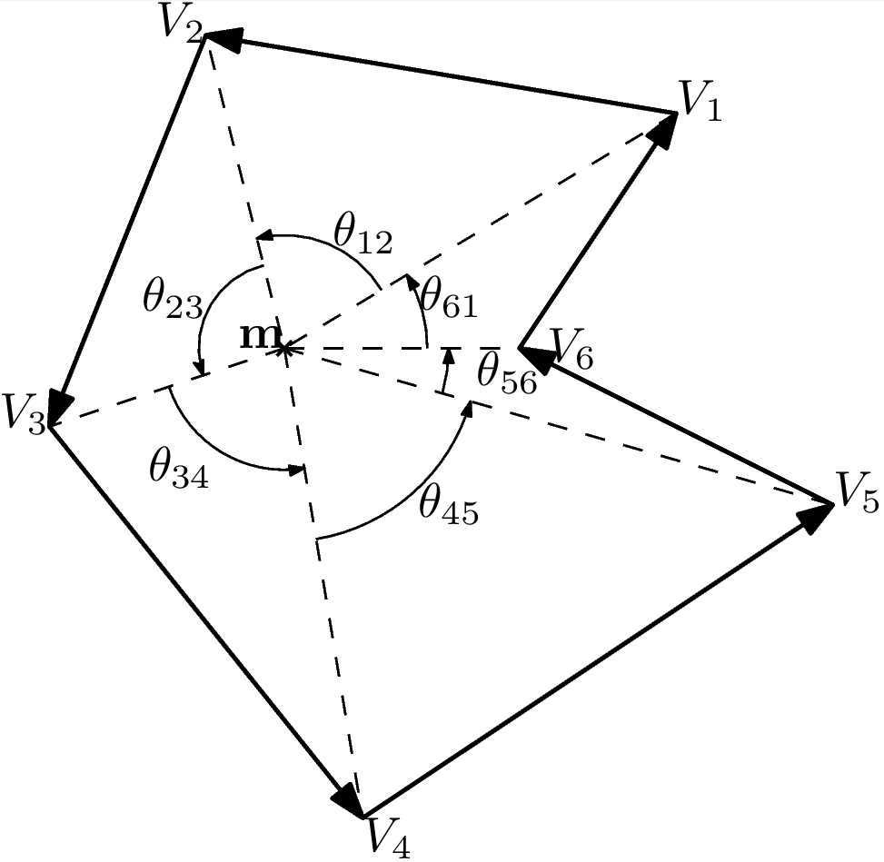
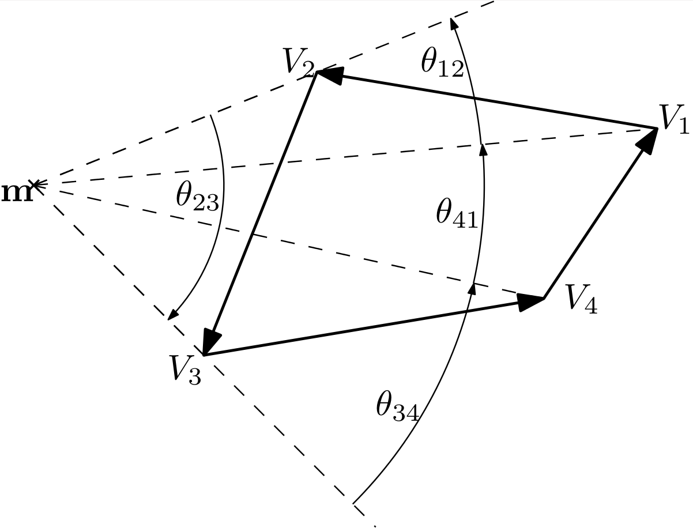

Separators¶
Introduction¶
A separator is an operator that performs two independent and complementary contractions. The separator is associated with a set (noted \(\mathcal{S}\)) and the first contraction (called “inner”) removes points inside \(\mathcal{S}\). The second contraction (called “outer”) removes points outside S. See [Jaulin & Desrochers 2014].
In concrete terms, given a box \([\mathbf{x}]\), the separator produces two sub-boxes \([\mathbf{x}_{in}]\) and \([\mathbf{x}_{out}]\) that verify:
For efficiency reasons, the separate(…) function takes two input-output arguments, <x_in> and <x_out>, each containing initially a copy of the box \([\mathbf{x}]\).
The first and more natural way to build a separator is to do it from a set implicitly defined by a constraint. See Separator from a constraint.
Since a separator can be viewed a as pair of contractors, another natural way to build a separator is from two complementary contractors. See Separator from complementary contractors.
A separator is however not necessarily built this way. A separator can also be built from a contractor and a predicate. In this case, the contractor is assumed to work with respect to the boundary of a set (that is, it removes both inner and outer points) and the predicate is assumed to state if a given box is either inside, outside or crossing the boundary of the same set. See Boundary-Based Separator.
Separator from a constraint¶
When the set \(\mathcal{S}\) corresponds to an inequality f(x)<0, a separator with respect to the set \(\mathcal{S}\) can therefore be automatically derived using forward / backward techniques for both contractions. This is what the SepFwdBwd class stands for.
The outer (resp. inner) contractor is simply a forward-backward with respect to f<0 (resp. f>=0).
// Define the function
Function f("x", "y", "x - y");
// Build the separator for the set X = {x, y | x - y < 0}
SepFwdBwd s(f, LT);
// Note: in a similar way, it is possible to define the separator
// for the complementary set : X = {x, y | x - y >= 0}
//SepFwdBwd s_compl(f, GEQ);
double _box[2][2] = {{0,3},{1,2}};
IntervalVector box(2,_box);
IntervalVector x_in=box;
IntervalVector x_out=box;
s.separate(x_in,x_out);
output << "result of inner contraction=" << x_in << endl;
output << "result of outer contraction=" << x_out << endl;
The result is:
result of inner contraction=([1, 3] ; [1, 2])
result of outer contraction=([0, 2] ; [1, 2])
Separator from complementary contractors¶
If two complementary contractors \(\mathcal{C}_{in}\) and \(\mathcal{C}_{out}\)
are available, the separator can build using the SepCtcPair class.
(to be completed)
Ctc c_in = ...
Ctc c_out = ...
// Build a separator from two complementary contractors
SepCtcPair s(c_in, c_out);
Boundary-Based Separator¶
Sometimes, we only have contractors with respect to the boundary of a set \(\mathcal{S}\). Isolating the inner and the outer contractor is not possible, or not easy. It is still possible to build a separator in this case, providing that we can also test whether a point belongs to the set or not.
Let us consider a contractor C w.r.t. the boundary of a set \(\mathcal{S}\). The main idea behind the separator is, first, to contract the input box using C and, second, to test for each box in \(\neg C\) if it belongs to \(\mathcal{S}\) or not.
The test is performed for a given box by picking randomly one point and calling a predicate. A predicate is an object of a class extending Pdc. It must implements a method test(IntervalVector&) that returns a boolean interval, that is, either YES, NO or MAYBE (see BoolInterval). In the case of a separator, the predicate must be an operator T such that:
A separator is built from a contractor and a predicate using the SepBoundaryCtc class.
Note: the predicate is called by SepBoundaryCtc only with points (degenerated boxes) but the interface for Pdc has been made to deal with a more general situation.
The separator for the constraint “points in polygon” is an illustraction of this type of separator.
As an illustration of the concept, we build here a separator for an inequality using SepBoundaryCtc:
// Define the function
Function f("x", "y", "x - y");
// Build a contractor for the boundary
CtcFwdBwd c(f,EQ);
// Build a predicate for the inside
PdcFwdBwd p(f,LEQ);
// Build the separator for the set X = {x, y | x - y < 0}
SepBoundaryCtc s(c,p);
double _box[2][2] = {{0,3},{1,2}};
IntervalVector box(2,_box);
IntervalVector x_in=box;
IntervalVector x_out=box;
s.separate(x_in,x_out);
output << "result of inner contraction=" << x_in << endl;
output << "result of outer contraction=" << x_out << endl;
The result is:
result of inner contraction=([1, 3] ; [1, 2])
result of outer contraction=([0, 3] ; [1, 2])
Separator Algebra¶
The Separator algebra is a direct extension of the set algebra. E.g., the intersection of two separators w.r.t \(\mathcal{S}_1\) and \(\mathcal{S}_2\) is a separator w.r.t. \(\mathcal{S}_1\cap\mathcal{S}_2\).
Here are the available operations and the way they are performed. Separators are viewed as pair of contractors denoted \(\mathcal{S}_i = (\mathcal{S}_i^{in}, \mathcal{S}_i^{out})\).
The following example shows how to combine separator for finding the union and intersection of 3 rings.
(to be completed)
// define the center of circle
double ax[] = {3,7,-3};
double ay[] = {4,3,7};
double dist[] = {3,6,6};
Variable x,y;
// Rings definitions
Function f1(x,y,sqrt(sqr(x-ax[0]) + sqr(y-ay[0])));
SepFwdBwd S1(f1,dist[0]);
Function f2(x,y,sqrt(sqr(x-ax[1]) + sqr(y-ay[1])));
SepFwdBwd S2(f2,dist[1]);
Function f3(x,y,sqrt(sqr(x-ax[2]) + sqr(y-ay[2])));
SepFwdBwd S3(f3,dist[2]);
// Negation of separator
SepNot S4(S3);
// union of separators
Array<Sep> AS(S1,S2,S3);
SepUnion SUL = SepUnion(AS); // Union from an array of separators
SepUnion SU2 = SepUnion(S1,S2); // Union from two separators
SepUnion SU3 = SepUnion(S1,S2,S3);
// intersection of separators
SepInter SIL = SepInter(AS);
SepInter SI2 = SepInter(S1,S2);
SepInter SI3 = SepInter(S1,S2,S4);
Separator for a Polygon¶
Note
This separator is avalaible in the ENSTA Robotics plugin (–with-ensta-robotics).
(under construction)
Contractor for a Segment¶
The CtcSegment class allows to contract a box w.r.t. a segment (in the plane), that is, w.r.t. to the constraint
where \(\mathbf{a}\in\mathbb{R}^2,\mathbf{b}\in\mathbb{R}^2\).
The contractor works by consider the following equivalent constraints :
the min and the max being interpreted componentwise.
Remark: The first constraint is an equality \(\mathbf{f}(x) = 0\) and the associated contractor will contract only on the boundary. We only have an approximation of \(\mathbb{X}^+\) because there is no inner part.
Point Inside a Polygon¶
We consider an oriented polygon \(\mathcal{P}\), convex or not, without self interaction, composed of N segments. The boundary \(\partial\mathcal{P}\) of the polygon satisfies the following constraint:
Let’s us take \(\mathcal{C}_{a_i,b_i}\) as a contractor for the segment \(\left[\mathbf{a_i},\mathbf{b_i}\right]\), the contractor for \(\partial\mathcal{P}\) is:
Remark: Because the union of minimal contractor is minimal, \(\mathcal{C}_{\partial\mathcal{P}}\) is a minimal contractor for the border of the polygon \(\mathcal{P}\).
To identify which part is inside and outside we use a test based on the Winding Number which represents the total number of times that curve travels counterclockwise around the point. The winding number depends on the orientation of the curve, and is negative if the curve travels around the point clockwise. Let us take a polygon \(\mathcal{P}\) with vertices’s \(V_1, V_2, \dots, V_n = V_1\) and \(\mathbf{m}\) a point not on the border of P. The Winding Number is defined by:
m is inside P  |
m is outside P  |
{kind=link}
{kind=link}
So, if m is outside P we will have \(\mathbf{wn}(\mathbf{m},P) = 0\), otherwise if \(\mathbf{m}\) is inside, \(\mathbf{wn}(\mathbf{m},P) = 1\).
The class implementing a separator for a polygon is SepPolygon.
(to be completed)
Example¶
Let \(\mathcal{S}_P\) be the polygon described in figure …
The following snippet shows how to build the associated separator and make operations with:
(to be completed)
// Polygone convex
vector<double> walls_xa,walls_xb,walls_ya,walls_yb;
walls_xa.push_back(6); walls_ya.push_back(-6); walls_xb.push_back(7); walls_yb.push_back(9);
walls_xa.push_back(7); walls_ya.push_back(9); walls_xb.push_back(0); walls_yb.push_back(5);
walls_xa.push_back(0); walls_ya.push_back(5); walls_xb.push_back(-9); walls_yb.push_back(8);
walls_xa.push_back(-9); walls_ya.push_back(8); walls_xb.push_back(-8); walls_yb.push_back(-9);
walls_xa.push_back(-8); walls_ya.push_back(-9); walls_xb.push_back(6); walls_yb.push_back(-6);
SepPolygon S1(walls_xa, walls_ya, walls_xb, walls_yb);
// Make a hole inside the first one
vector<double> walls_xa2,walls_xb2,walls_ya2,walls_yb2;
walls_xa2.push_back(-2); walls_ya2.push_back(3); walls_xb2.push_back(3.5); walls_yb2.push_back(2);
walls_xa2.push_back(3.5); walls_ya2.push_back(2); walls_xb2.push_back(3); walls_yb2.push_back(-4);
walls_xa2.push_back(3); walls_ya2.push_back(-4); walls_xb2.push_back(-3); walls_yb2.push_back(-3);
walls_xa2.push_back(-3); walls_ya2.push_back(-3); walls_xb2.push_back(-2); walls_yb2.push_back(3);
SepPolygon S2(walls_xa2, walls_ya2, walls_xb2, walls_yb2);
SepNot S3(S2);
// Separator for the polygon with a hole in it
SepInter S(S1, S3);
Using a paver, the previous separator will produce the following figure :
{kind=link}